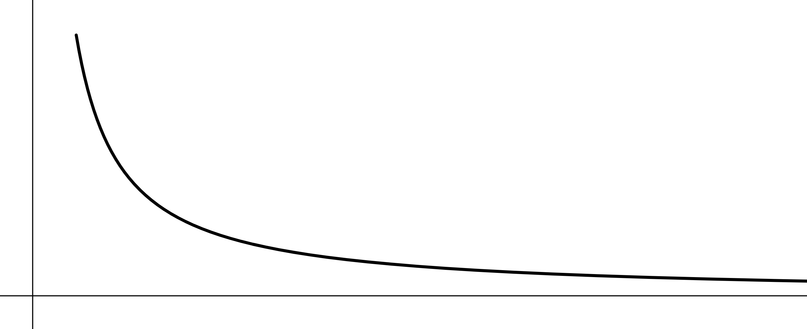

C'est quoi cette histoire de trompette ? Et bien dans les trois grandes religions monothéistes, un ange va annoncer la fin des temps en faisant sonner une trompette... Gabriel dans la tradition judéo-chrétienne, Djibril pour la musulmane. Mais en mathématiques c'est tout autre chose. Par définition c'est une surface de révolution qu'on obtient en faisant tourner une hyperbole. On est pas plus avancé, mais en gros voilà ce qu'on va faire tourner autour d'un axe
Et quand on fait tourner cette courbe on obtient :
Ce qu'il y a de fou avec cet entonnoir c'est qu'il est de volume fini, mais de surface infinie ! Ainsi, il est tout à fait possible de le remplir d'un pot de peinture, mais gare à celui qui tentera de la peindre.
Passons maintenant au gros calcul : On veut calculer le volume totale de la trompette. Il faut alors intégrer la coupe du volume le long de la longueur, en intégrant on obtient \[V = \int_1^\infty\pi\frac{1}{x^2}dx=\pi\left[-\frac{1}{x}\right]_1^\infty=\frac{1}{1}=1\] Donc le volume est fini, et il vaut 1 ! Pour l'aire c'est un peu plus compliquer, mais on a la formule qui dit que l'aire d'une surface engendrée par une courbe de rotation entre \{x_1\} et \(x_2\) est \[A=2\pi\int_{x_1}^{x^2}2f(x)\sqrt{1+f'(x)}\]Et donc dans notre cas : \[A=2\pi\int_1^{x_1}\frac{1}{x}\sqrt{1+(-\frac{1}{x^2})^2}dx>2\pi\int_1^{x_1}\frac{dx}{x}=2\pi\ln(x_1)\]Or, on a ici minoré par quelque chose qui tend vers plus l'infini, donc l'intégrale tend vers plus l'infini. Et ainsi on a montré que l'aire est infinie !